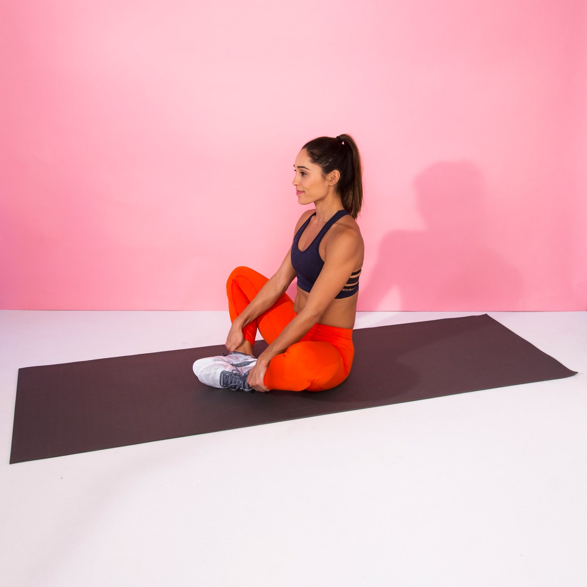

Stretches
Butterfly Stretch

Stretch your inner thighs, groin, hips and muscles around your knees with a proper butterfly stretch
How do you do butterfly stretches?
- Sit tall on the floor with the soles of your feet together, knees bent out to sides.
- Hold onto your ankles or feet, engage your abs, and slowly lower your body toward your feet as far as you can while pressing your knees toward the floor.
- If you're too tight to bend over, simply press your knees down.
- Hold this stretch for 30 seconds to 2 minutes.
Click here for the video tutorial
https://www.youtube.com/watch?v=MdE_Cj6ChLo
What are the benefits of butterfly stretching?
- It’s a great option for people who sit or stand for long periods and can protect your hips from overuse injuries from walking, running, or cycling.
- The butterfly stretch targets your hips along with your groin, inner thighs, and knees. Loosening up these areas of the body and strengthening your back muscles can help to improve posture.
- People have also used this stretch to boost circulation, stimulate digestive organs to improve digestion, ease menstrual discomfort, and in managing erectile dysfunction.